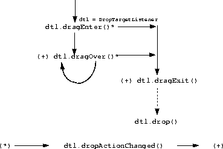

| CONTENTS | PREV | NEXT | Drag and Drop |
The Java.awt.Component class has two additional methods added to allow the (dis)association with a DropTarget. In particular:
public class java.awt.Component /* ... */ {
// ...
public synchronized
void setDropTarget(DropTarget dt);
public synchronized
DropTarget getDropTarget(DropTarget df);
//
}
To associate a DropTarget with a Component one may invoke either; DropTarget.setCompononent() or Component.setDropTarget() methods. Thus conforming implementations of both methods are required to guard against mutual recursive invocations.To disassociate a DropTarget with a Component one may invoke either; DropTarget.setCompononent(null) or Component.setDropTarget(null) methods.
Conformant implementations of both setter methods in DropTarget and Component should be implemented in terms of each other to ensure proper maintenance of each other's state.
The setDropTarget() method throws IllegalArgumentException if the DropTarget actual parameter is not suitable for use with this class/instance of Component. It may also throw UnsupportedOperationException if, for instance, the Component does not support external setting of a DropTarget.
A DropTarget encapsulates all of the platform-specific handling of the Drag and Drop protocol with respect to the role of the recipient or destination of the operation.A single DropTarget instance may typically be associated with any arbitrary instance of java.awt.Component. Establishing such a relationship exports the associated Component's geometry to the client desktop as being receptive to Drag and Drop operations when the coordinates of the logical cursor intersects that visible geometry.
The DropTarget class is defined as follows:
public class java.awt.dnd.DropTarget
implements DropTargetListener, Serializable {
public DropTarget(Component c,
int actions,
DropTargetListener dsl,
boolean isActive,
FlavorMap fm
);
public DropTarget();
public DropTarget(Component c);
public DropTarget(Component c, DropTargetListener dsl);
public Component getComponent();
public void setComponent(Component c);
public DropTargetContext getDropTargetContext();
public void
addDropTargetListener(DropTargetListener dte)
throws TooManyListenersException;
public void
removeDropTargetListener(DropTargetListener dte);
public void setActive(boolean active);
public boolean isActive();
public FlavorMap getFlavorMap();
public void setFlavorMap(FlavorMap fm);
public void setDefaultActions(int actions);
public int getDefaultActions();
protected DropTargetContext createDropTargetContext();
public void addNotify(ComponentPeer cp);
public void removeNotify(ComponentPeer cp);
}
The setComponent() method throws IllegalArgumentException if the Component actual parameter is not appropriate for use with this class/instance of DropTarget, and may also throw UnsupportedOperationException if the Component specified disallows the external setting of a DropTarget.The addDropTargetListener() and removeDropTargetListener() methods allow the unicast DropTargetListener to be changed.
The setActive() and isActive() methods allow the DropTarget to be made active or otherwise and for its current state to be determined.
The getFlavorMap() methods is used to obtain the FlavorMap associated with this DropTarget for the purposes of mapping any platform dependent type names to/from their corresponding platform independent DataFlavors.
The setFlavorMap() method allows a new FlavorMap to be assigned to the DropTarget, a parameter of null causes a "default" FlavorMap to be installed for the DropTarget.
The createDropTargetContext() method is only invoked to provide the underlying platform dependent peer with an instantiation of a new DropTargetContext as a Drag operation initially encounters the Component associated with the DropTarget. If no DropTargetContext is currently associated with a DropTarget, a permitted side-effect of an invocation of getDropTargetContext() is to instantiate a new DropTargetContext.
The addNotify() and removeNotify() methods are only called from Component to notify the DropTarget of the Component's (dis)association with its ComponentPeer.
Note that the DropTarget itself implements DropTargetListener, this is to allow the platform peer, the DropTargetContextPeer instance, created by the platform, to notify the DropTarget of changes in state in the ongoing operation, and thus allows the DropTarget to interpose itself between the platform and the DropTargetListener registered with the DropTarget.
As the logical cursor associated with an ongoing Drag and Drop operation first intersects the visible geometry of a Component with an associated DropTarget, the DropTargetContext associated with the DropTarget is the interface, through which, access to, and control over state of the recipient protocol is achieved from the DropTargetListener.A DropTargetContext is created by a DropTarget, via it's createDropTargetContext() method, as a side effect of a call to a DropTarget's getDropTargetContext() method, if no DropTargetContext currently exists for that DropTarget.
The DropTargetContext interface is defined as follows:
public class DropTargetContext {
public DropTarget getDropTarget();
public Component getComponent();
public void dropComplete(boolean success)
throws InvalidDnDOperationException;
public void acceptDrag(int dropAction);
public void rejectDrag();
public void acceptDrop(int dropAction);
public void rejectDrop();
public void addNotify(DropTargetContextPeer dtcp);
public void removeNotify();
protected Transferable
createTransferableProxy(Transferable t,
boolean isLocal
);
protected void setTargetActions(int actions);
protected int getTargetActions();
protected DataFlavor[] getCurrentDataFlavors();
protected List getCurrentDataFlavorsAsList();
protected boolean isDataFlavorSupported(DataFlavor df);
protected Transferable getTransferable();
}
Most of the access and control methods are protected, since public access to their state is usually achieved by calling through a particular DropTargetEvent subclass that delegates the request to the DropTargetContext.The getDropTarget() method return the DropTarget that created this DropTargetContext.
The getComponent() method returns the Component associated with the DropTarget that created this DropTargetContext.
The acceptDrag() method is delegated from the similar method on DropTargetDragEvent and is invoked from one of the DropTargetListener's methods; dragEnter(), dragOver() or dropActionChanged() to signify that the recipient is prepared to accept a drop with the operation specified, which is usually the user's currently selected action.
The rejectDrag() method is delegated from the similar method on DropTargetDragEvent and is invoked from one of the DropTargetListener's methods; dragEnter(), dragOver() or dropActionChanged() to signify that the recipient is unable to accept a drop with the user's currently selected action.
The acceptDrop() method is delegated from the similar method on DropTargetDropEvent and is invoked from the DropTargetListener's drop() method to signify that the recipient is prepared to accept a drop with the operation specified, which is usually the user's currently selected action.
The rejectDrop() method is delegated from the similar method on DropTargetDropEvent and is invoked from the DropTargetListener's drop() method to signify that the recipient is unable to accept a drop with the user's currently selected action. This terminates a Drag and Drop operation without a data transfer.
The dropComplete() method signals to the originating DragSource that the DropTargetListener has completed the transfer(s) that comprise the subject of the Drag and Drop operation and that the operation is complete. The success (or failure) of the transfer(s) and the subsequent application of the operation specified is signaled by the value of the actual parameter.
The getDataFlavors() method returns an array of the DataFlavors available from the DragSource.
The getTransferable() method returns a Transferable (not necessarily the one the DragSource registered, it may be a proxy, and certainly shall be in the inter-JVM* case) to enable data transfers to occur via its getTransferData() method. Note that it is illegal to invoke getTransferable() without first invoking an acceptDrop().
The addNotify() and removeNotify() methods are exclusively called by the underlying platform's DropTargetContextPeer in order to notify the DropTargetContext that a Drag and Drop operation is occurring/ceasing on the DropTargetContext and associated DropTarget.
The createTransferableProxy() method enables a DropTargetContext implementation to interpose a Transferable between the DropTargetListener and the Transferable provided by the caller, which is typically the underlying platform DropTargetContextPeer.
Providing the appropriate "Drag-under" feedback semantics, and processing of any subsequent Drop, is enabled through the DropTargetListener asssociated with a DropTarget.The DropTargetListener determines the appropriate "Drag-under" feedback and its response to the DragSource regarding drop eligibility by inspecting the sources suggested actions and the data types available.
A particular DropTargetListener instance may be associated with a DropTarget via addDropTargetListener() and removed via removeDropTargetListener() methods.
public interface java.awt.dnd.DropTargetListener
extends java.util.EventListener {
void dragEnter (DropTargetDragEvent dtde);
void dragOver (DropTargetDragEvent dtde);
void dropActionChanged (DropTargetDragEvent dtde);
void dragExit (DropTargetDragEvent dtde);
void drop (DropTargetDropEvent dtde);
}
 The dragEnter() method of the DropTargetListener is invoked when the hotspot of the logical "Drag" Cursor intersects a visible portion of the DropTarget's associated Component's geometry. The DropTargetListener, upon receipt of this notification, shall interrogate the operations or actions, and the types of the data (DataFlavors) as supplied by the DragSource to determine the appropriate actions and "Drag-under" feedback to respond with invocation of either acceptDrag() or rejectDrag().
The dragOver() method of the DropTargetListener is invoked while the hotspot of the logical "Drag" Cursor, in motion, continues to intersect a visible portion of the DropTarget's associated Component's geometry. The DropTargetListener, upon receipt of this notification, shall interrogate the operation "actions" and the types of the data as supplied by the DragSource to determine the appropriate "actions" and "Drag-under" feedback to respond with an invocation of either acceptDrag() or rejectDrag().
The getLocation() method return the current co-ordinates, relative to the associated Component's origin, of the hotspot of the logical "Drag" cursor.
The getSourceActions() method return the current "actions", or operations (ACTION_MOVE, ACTION_COPY, or ACTION_LINK) the DragSource associates with the current Drag and Drop gesture.
The dragExit() method of the DropTargetListener is invoked when the hotspot of the logical "Drag" Cursor ceases to intersect a visible portion of the DropTarget's associated Component's geometry, or immediately prior to a drop() notification. The DropTargetListener, upon receipt of this notification, shall undo any "Drag-under" feedback effects it has previously applied. Note that the DropTargetContext associated with the DropTarget is invalidated as a side-effect
The drop() method of the DropTargetListener is invoked as a result of the user terminating their Drag gesture while intersecting. The DropTargetListener, upon receipt of this notification, shall perform the operation specified by the return value of the getSourceActions() method on the DropTargetDropEvent object, upon the Transferable object returned from the getTransferable() method, and subsequently invoke the dropComplete() method of the associated DropTargetContext to signal the success, or otherwise, of the operation.
The DropTargetEvent and DropTargetDragEvent are defined as follows:
public abstract class java.awt.dnd.DropTargetEvent
extends java.util.EventObject1 {
public DropTargetContext getDropTargetContext();
}
A DropTargetEvent is passed to the DropTargetListener's dragExit() method.
public class java.awt.dnd.DropTargetDragEvent
extends java.awt.dnd.DropTargetEvent {
public DataFlavor[] getDataFlavors();
public Point getLocation();
public int getSourceActions();
public getDropAction();
public DataFlavor[] getCurrentDataFlavors();
public List getCurrentDataFlavorsAsList();
public boolean isDataFlavorSupported();
public void acceptDrag(int operation);
public void rejectDrag();
}
A DropTargetDragEvent is passed to the DropTargetListener's dragEnter(), dragOver() and dropActionChanged() methods.The getLocation() method return the current co-ordinates, relative to the associated Component's origin, of the hotspot of the logical "Drag" cursor.
The getSourceActions() method return the current "actions", or operations (ACTION_MOVE, ACTION_COPY, or ACTION_REFERENCE) the DragSource associates with the current Drag and Drop gesture.
The getCurrentDataFlavors(), getCurrentDataFlavorsAsList(), and isDataFlavorSupported(), methods are provided in order for the recipient to interrogate the list of types available from the source.
public class java.awt.dnd.DropTargetDropEvent
extends java.awt.dnd.DropTargetEvent {
public Point getLocation();
public int getSourceActions();
public int getDropAction();
public void acceptDrop(int dropAction);
public void rejectDrop();
public boolean isLocalTransfer();
public DataFlavor[] getCurrentDataFlavors();
public List getCurrentDataFlavorsAsList();
public boolean isDataFlavorSupported(DataFlavor df);
public Transferable getTransferable();
public void dropComplete(boolean success);
}
A DropTargetDropEvent is passed to the DropTargetListener's drop() method, as the Drop occurs. The DropTargetDropEvent provides the DropTargetListener with access to the Data associated with the operation, via the Transferable returned from the getTransferable() method.The return value of the getSourceActions() method is defined to be the action(s) defined by the source at the time at which the Drop occurred.
The return value of the getDropAction() method is defined to be the intersection of both the Drop action selected by the users gesture, and the set of actions supported by the source, at the time of the Drop. The resulting action is normally the intersection of this value and the set of actions supported by the target at the time of the drop.
The return value of the getLocation() method is defined to be the location at which the Drop occurred.
The getCurrentDataFlavors(), getCurrentDataFlavorsAsList(), and isDataFlavorSupported(), methods are provided in order for the recipient to interrogate the list of types available from the source for subsequent transfer via the getTransferData() method of the Transferable.
A typical implementation of the drop() method will inspect the actions and the DataFlavors' available to determine if a successful exchange can occur or not.
When an exchange may occur, a DropTargetListener.drop() implementation shall invoke acceptDrop() with the selected operation as an actual parameter, prior to any invocation of getTransferable(). Calling getTransferable() prior to acceptDrop() shall result in an InvalidDnDOperationException.
The rejectDrop() shall be called to reject the Drop operation. Once called no further interaction can occur between the two participants, therefore it is typical to return from the drop() method immediately after calling this.
The isLocalTransfer() method shall return true, if the source of the Drag and Drop operation resides within the same physical JVM as the recipient of the drop() notification, and false otherwise.
This distinction is significant to the recipient when it receives object references back from invoking Transferable.getTransferData() in the local case, since in this case the object reference it receives is the same object reference held by the source (i.e it is not a copy, proxy or distinct object) thus the recipient must treat such a shared object reference differently in the local case as follows:
- If the action is ACTION_COPY then the recipient shall, depending upon the nature of the object(s) and data transferred, either take a copy of; the object itself, the data encapsulated within, or both.
- If the action is ACTION_MOVE, then the recipient shall not modify the state of the object or the data encapsulated within until after it has signalled to the source, via an invocation of dropCompete() that the transfer is effected. (Note that a source is also prohibited from modifying the state of such an object after it has returned such an object from it's getTransferData() method, until such time as it receives a dragDropEnd() notification.)
- If the action is ACTION_LINK, neither the recipient nor the source shall alter the state of either the object exchanged or any data contained therein until after the dropComplete() and dragDropEnd() methods have been processed. Thereafter the sharing semantics are implementation dependent upon the object(s) shared.
The dropComplete() method signals the end of the associated Drag and Drop operation, and indicates the success (or failure) of the transfers performed by the recipient. Invoking this method results in the DragSourceListener's dragDropEnd() method being called with the appropriate state available from it's DragSourceDropEvent. Failure to invoke this method will result in the Drag and Drop operation failing to terminate properly.
Many GUI Components present a scrollable "viewport" over a (potentially) large dataset. During a Drag and Drop operation it is desirable to be able to "autoscroll" such "viewports" to allow a user to navigate over such a dataset, scrolling to locate a particular member (initially not visible through the "viewport") that they wish to drop the subject of the operation upon.Components that are scrollable provide Drag "autoscrolling" support to their DropTarget by implementing the following interface:
public interface Autoscroll {
Insets getAutoscrollInsets();
void autoScrollContent(Point cursorLocn);
}
An implementing DropTarget shall periodically call the autoscroll() method of its associated Component (if present), passing the current logical cursor location in Component co-ordinates, when the following conditions are met:
- If the logical cursor's hotspot intersects with the associated Component's visible geometry and the boundary region described by the Insets returned by the getAutoscrollInsets() method.
- If the logical cursor's hotspot has not moved (subject to the next condition below) for an implementation defined period (millisecs)
- If any cursor movement subsequent to the initial triggering occurrence does not exceed a platform dependent hysteresis value (pixels).
Should any of the above conditions cease to be valid, autoscrolling shall terminate until the next triggering condition occurs.Both the initial delay prior to autoscrolling commencing, the interval between autoscrolling notifications, and the pixel hysteresis value are externally configurable and can be queried from the Toolkit.getDesktopProperty() method.
*As used on this web site, the terms "Java Virtual Machine" or "JVM" mean a virtual machine for the Java platform.